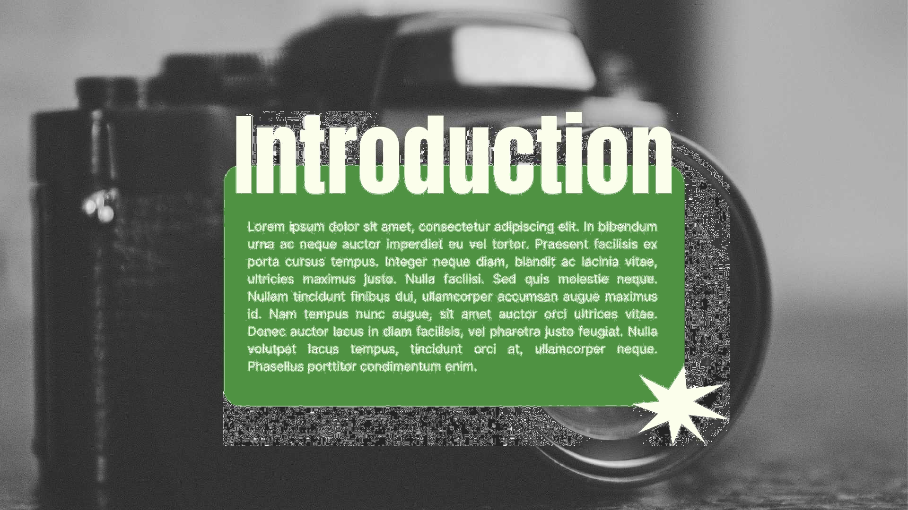
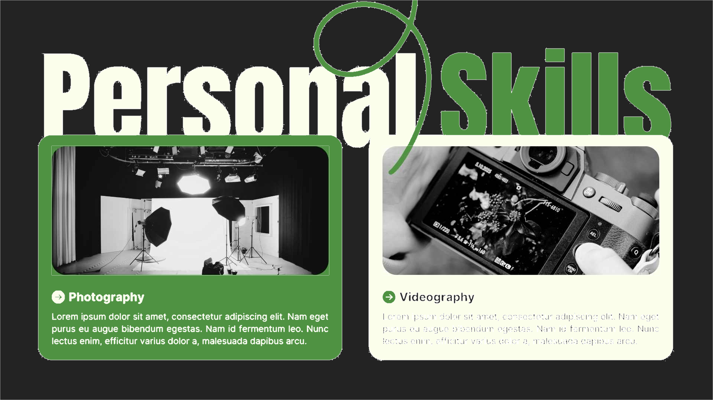
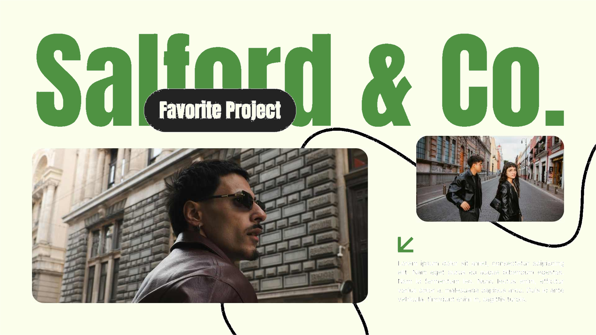
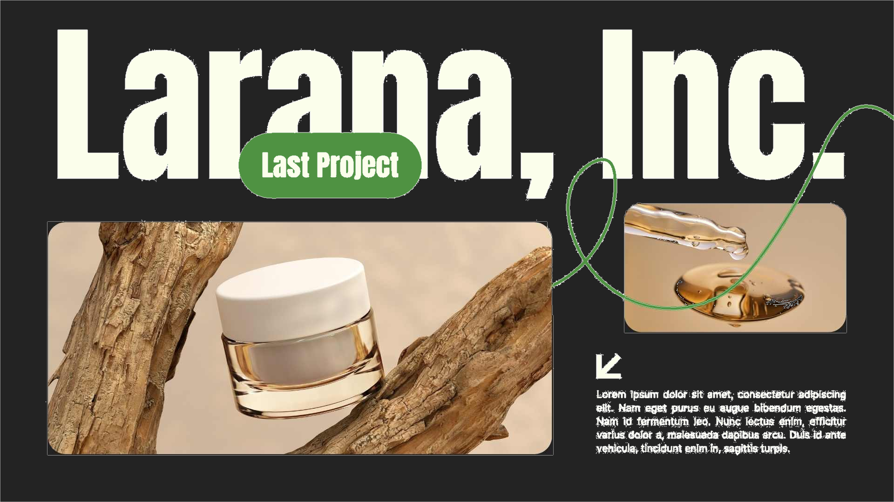

a25-02 · HTML 编辑 · SVG · 原图

a25-03 · HTML 编辑 · SVG · 原图
a25-04 · HTML 编辑 · SVG · 原图
a25-05 · HTML 编辑 · SVG · 原图

a25-06 · HTML 编辑 · SVG · 原图
a25-07 · HTML 编辑 · SVG · 原图
a25-08 · HTML 编辑 · SVG · 原图

a25-09 · HTML 编辑 · SVG · 原图

a25-10 · HTML 编辑 · SVG · 原图
a25-11 · HTML 编辑 · SVG · 原图